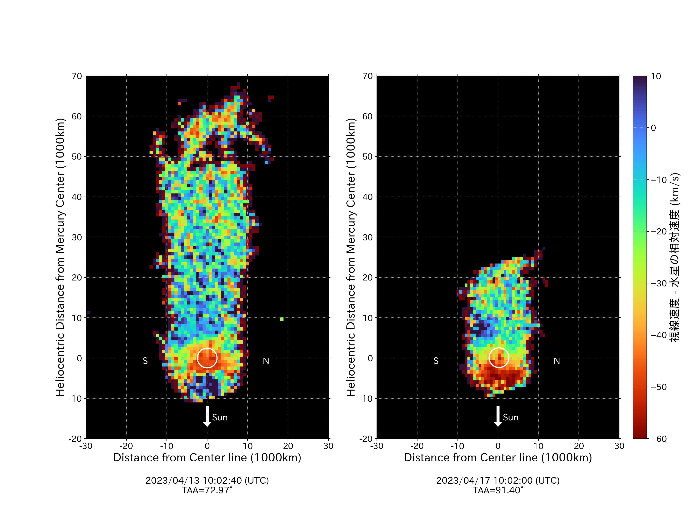

渋谷幕張高校天文部のホームページへようこそ！
このサイトは渋幕天文部内の有志によって作成されたものです。渋幕天文部の普段の様子や最近の活動などを公開しています。
普段の活動
- 天文部の主戦場といえば夜！ときおり学校に泊まり込みで星空の観察を行います。
普段は入れない屋上を使えたり、夜のいつもと違った学校を楽しめるのも魅力の一つ！
>>夜間観測のギャラリーへ >>天体撮影のギャラリーへ - 毎週月・水・金の放課後にICT2に集まり撮影した画像の処理やプラネタリウムなどの活動を行っています。ゆるい部活なので部員数のわりに普段の集まりは悪いです。
>>放課後のギャラリーへ - 夜が長くなる冬は、放課後遅い時間に高校棟5階の天文台を開放して観察をすることができます。
- 晴れの日は、昼休みに天文台を開けて太陽の観察を行っています。黒点観測やスペクトルの測定など。
>>昼間観測のギャラリーへ
実績
- JSEC2023協力社賞受賞
天文部 on 文化祭
渋幕校舎の入口を右に曲がってすぐのところ（セミナー2A）で、毎年プラネタリウムで星座(春・夏・秋・冬・南天)などの解説を行っています。撮影したものを展示したりもします。機会があればぜひお越しください！！
>>文化祭のギャラリーへ
最近の活動
-
JSEC2023で協力社賞受賞
JSEC2023（第21回高校生・高専生科学技術チャレンジ）に「水星ナトリウム大気と尾の形成」というテーマで参加し、阪急交通社賞をいただきました。
-
夜間観測会実施
11/18日に学校に泊まって観測をする、夜間観測会を実施しました。